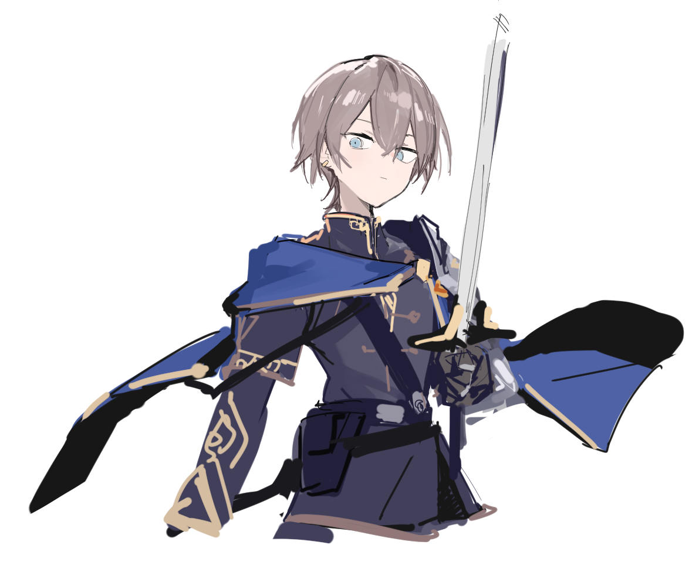
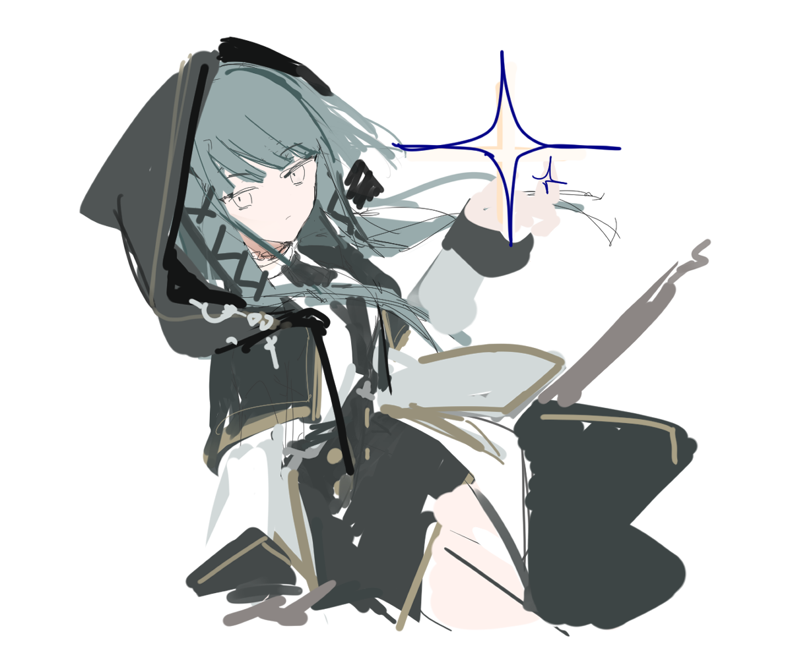
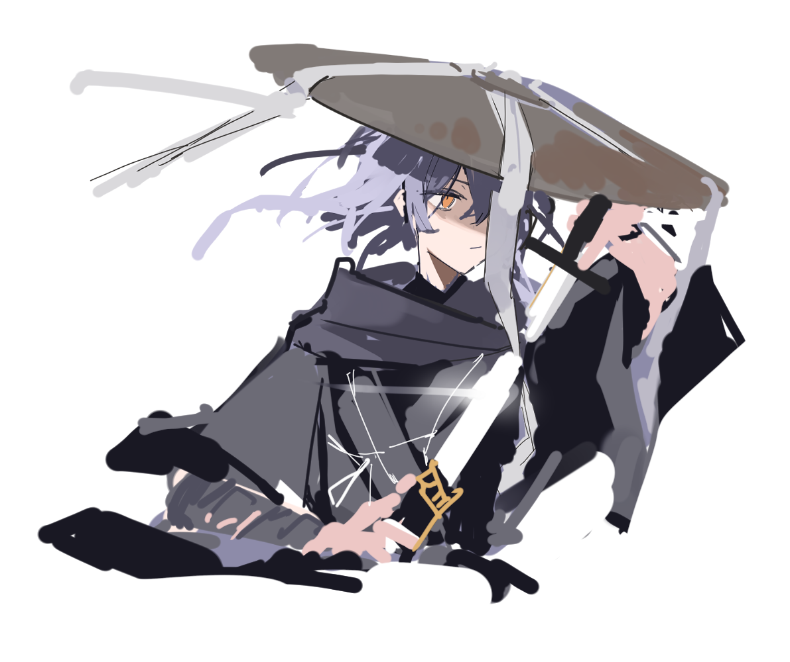

迷宮探索
一人称の3D視点と地図を頼りに、まだ見ぬ道へ。進むか、引き返すか。その判断も冒険の一部。
FANTASY LABYRINTH RPG
IN DEVELOPMENTその一歩が、
魔王へとつながっている。
地図の先には、まだ知らない世界がある。
仲間と挑む、迷宮探索ファンタジーRPG。

KOTAMA YOUR ADVENTURE BEGINSSTORY
旅の目的は、魔王の討伐。
その長い道のりは、緑深い樹海から始まる。
未知の道を進み、魔物に挑み、仲間と強くなる。
ひとつひとつの選択を重ねて、
コタマたちは魔王のもとを目指す。
GAME SYSTEM
一人称の3D視点と地図を頼りに、まだ見ぬ道へ。進むか、引き返すか。その判断も冒険の一部。
敵の弱点を見極め、仲間の行動を選ぶターン制バトル。守りを固める一手が、反撃への道を開く。
前衛を守る騎士、回復を担う治癒士、属性で攻める魔術師。職業とスキルを組み合わせ、自分だけの戦い方を。
CHARACTERS
雷を操り、仲間と迷宮を切り拓く冒険者。
 立ち絵を準備中
立ち絵を準備中盾と防御技で仲間を守る前衛。
 立ち絵を準備中
立ち絵を準備中回復と状態異常の治療で仲間を支える。
 立ち絵を準備中
立ち絵を準備中拳による攻撃と封じ技で敵を追い詰める前衛。

立ち絵を準備中炎・氷・雷の魔法を使い分ける。

立ち絵を準備中刀による連続攻撃で敵を斬り伏せる前衛。
キャラクターのデザインや職業の性能は開発中のため、変更される場合があります。
THE FIRST LABYRINTH
魔王討伐への道のりは、ぜひゲームの中で発見してください。背景は色と光によるイメージ演出です。
GAME INFORMATION
タイトル：コタマのぼうけん
ジャンル：迷宮探索・ターン制ファンタジーRPG
プラットフォーム：ブラウザ / 開発中
「ゲームを始める」ボタンは別サイトのゲーム本体へ移動します。ゲームの公開状況によってはアクセスできない場合があります。